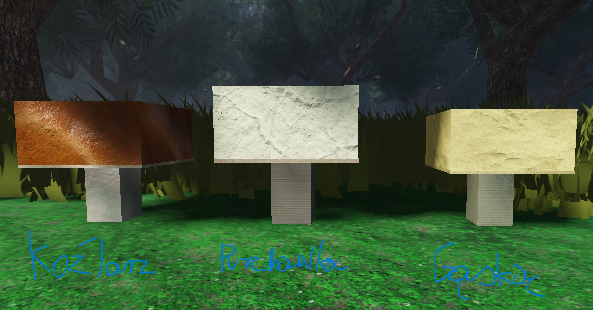

INFORMACJE O UPDATE
Tu znajdziesz informacje na temat update.
V 0.1
Co nowego?
Dodano nowego grzyba: Maślak
Naprawiono kilka bugów
V 0.2
Co nowego ?
Dodano lepszą grafikę
Naprawiono bugi
Dodano gamepassy
V 0.6.0
Co nowego?
Dodano nowe grzyby:
-purchawka
-kurka
-gąska

Nowy system pojawiania się grzybów
Sklep z przedmiotami za MUSHCOINS
(POMINĄŁĘM INFORMACJE O WESJI 0.3 I POŻNIEJSZYCH GDYŻ WNOSILY GŁÓWNIE JEDNĄ RZECZ A NAPISAŁEM O NICH DOPIERO TERAZ W V 0.6.0)
Co będzie w 0.6.1?
Ulepszę indeks w grze
Dodam działające gamepassy